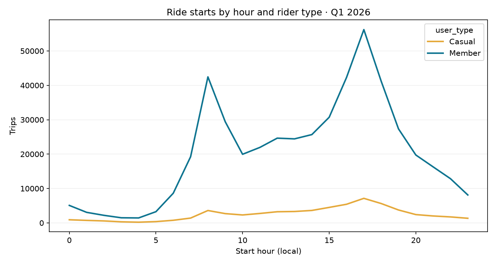

Visualization · SQL · Python · customer behavior
Bike Share Rider Patterns
Compare member and casual rider trip timing, duration, and station use using Toronto Bike Share ridership data. The analysis focuses on rider behavior and clear, decision-oriented visuals.
Questions explored
- How do trip timing and duration differ by membership type?
- Which hours, weekdays, and station pairs have the most rides?
- What descriptive patterns could inform service planning or membership questions?


How to reproduce
- Install dependencies with
pip install -r requirements.txt. - Run
python src/analyze.pyto download the source and regenerate cleaned trips, summaries, and charts. - Explore the SQL in
sql/analysis.sqland use the measures and Power Query starter inpowerbi/.
Limitations: The source period is Q1 2026 only. Trip totals do not explain why people ride, and this quarter should not be treated as a full-year or seasonal comparison.